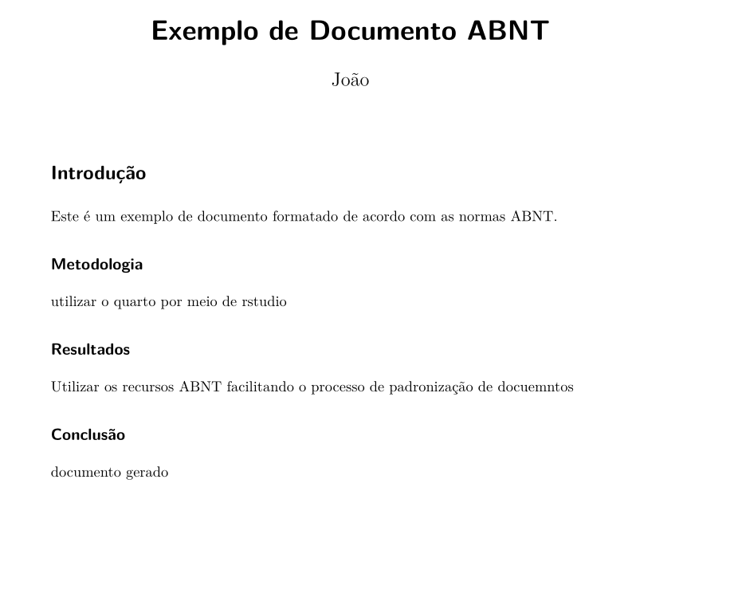

Extensão ABNT para Quarto: o facilitador para Documentos Acadêmicos

E aí, pessoal! Se você já passou horas (ou dias!) lutando com a formatação de um trabalho acadêmico seguindo as normas da ABNT, sabe como isso pode ser um verdadeiro pesadelo. Margens, fontes, citações, referências… Ufa! É tanta coisa que às vezes a gente até esquece do mais importante: o conteúdo do trabalho.
Pensando nisso, eu criei uma extensão para o Quarto que vai facilitar (e muito!) a sua vida na hora de formatar documentos acadêmicos. Quer saber como ela funciona e como você pode usá-la? Vem comigo que eu te explico tudo!
O que é a Extensão ABNT para Quarto?
Imagine uma ferramenta que faz toda a formatação chata do seu trabalho automaticamente, enquanto você foca só em escrever. Pois é, essa extensão faz exatamente isso! Ela é como um “assistente pessoal” para quem precisa seguir as normas da ABNT.
Ela vem com:
Um template LaTeX que já deixa tudo no jeito: margens certinhas, fontes adequadas, títulos e seções formatados.
Um estilo de citação (CSL) que cuida das referências bibliográficas, seguindo direitinho as regras da ABNT.
Um exemplo prático para você ver como funciona e já começar a usar sem enrolação.
Ou seja, é praticamente um “ctrl+c, ctrl+v” da formatação ABNT. 😉
Por que Você Vai Adorar Essa Extensão?
Vou te dar alguns motivos para você ficar animado(a) com essa extensão:
Economiza Tempo:
- Chega de perder horas ajustando margens e fontes. Com essa extensão, você clica em “renderizar” e voilà: seu documento está pronto!
Padronização Garantida:
- Sem mais preocupação com erros de formatação. A extensão cuida de tudo para você, seguindo as normas ABNT à risca.
Fácil de Usar:
- Não precisa ser expert em LaTeX ou Quarto. Basta seguir uns passinhos simples e pronto!
Personalizável:
- Se você quiser fazer ajustes no template, pode personalizar à vontade. É só abrir o arquivo e mudar o que precisar.
Como Usar a Extensão? (Passo a Passo)
Vou te explicar direitinho como começar a usar essa extensão. É tão fácil que você vai se perguntar por que não fez isso antes!
Passo 1: Baixar a Extensão
Clone o Repositório:
Abra o terminal e digite:bash
Copy
git clone https://github.com/juauzz/extensionABNT.gitCopie para o Seu Projeto:
No seu projeto Quarto, crie uma pasta chamada
_extensions(se ainda não tiver).Copie a pasta
extensionABNTpara dentro de_extensions.
A estrutura do seu projeto vai ficar assim:
Copy
/meu-projeto-quarto /_extensions /extensionABNT /examples - example.qmd /templates - abnt-templates.tex - abnt.csl - _extension.yml - README.md - meu-documento.qmd
Passo 2: Configurar o Arquivo
No seu arquivo .qmd, adicione a extensão ao formato PDF:
yaml
Copy
---
title: "Meu Documento ABNT"
author: "Seu Nome"
format:
pdf:
extensions: [extensionABNT]
---Passo 3: Renderizar o Documento
Agora é só renderizar o documento. No terminal, digite:
bash
Copy
quarto render meu-documento.qmd --to pdfE pronto! Seu documento vai sair formatadinho, seguindo todas as normas da ABNT. 😎
Exemplo Prático
Se você é do tipo que gosta de ver para crer, na pasta examples tem um arquivo example.qmd que já está pronto para usar. Para renderizá-lo, é só rodar:
bash
Copy
quarto render examples/example.qmd --to pdfDepois é só abrir o PDF e ver como ficou. Spoiler: vai ficar show de bola! 😉
Quer Personalizar? Sem Problema!
Se você quiser fazer ajustes no template ou no estilo de citação, é super fácil:
Template LaTeX: O arquivo
templates/abnt-templates.texpode ser editado para mudar margens, fontes, formatação de títulos, etc.Estilo de Citação: O arquivo
abnt.csldefine o estilo das referências. Se precisar de algo diferente, é só trocar por outro arquivo CSL.
Contribuições São Bem-Vindas!
Se você gostou da extensão e quer ajudar a melhorá-la, fique à vontade para contribuir! Pode ser reportando um bug, sugerindo uma melhoria ou até enviando um código novo. É só abrir uma issue ou enviar um pull request. Todo mundo ganha quando a gente colabora, né?
Licença
Essa extensão é open-source e está sob a MIT License. Isso significa que você pode usar, modificar e compartilhar à vontade. Só não esquece de dar os créditos, hein? 😉
Conclusão
E aí, curtiu? A Extensão ABNT para Quarto foi feita para tirar um peso das suas costas na hora de formatar trabalhos acadêmicos. Agora você pode focar no que realmente importa: o conteúdo do seu trabalho.
Se você testar e gostar, me conta nos comentários! E se tiver alguma dúvida ou sugestão, é só chamar. Vamos juntos fazer essa extensão ainda melhor!